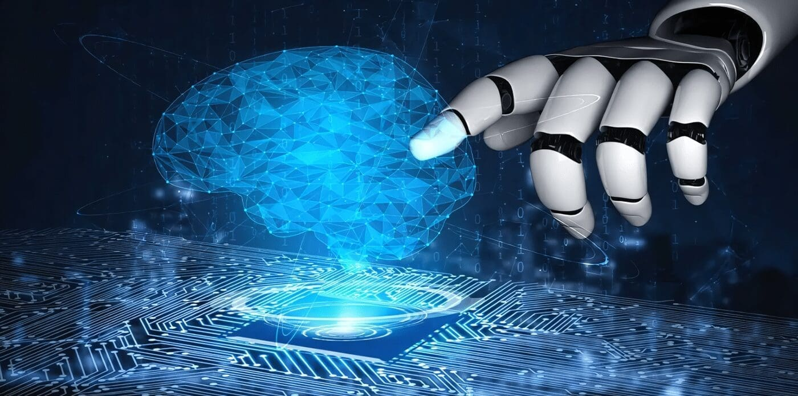
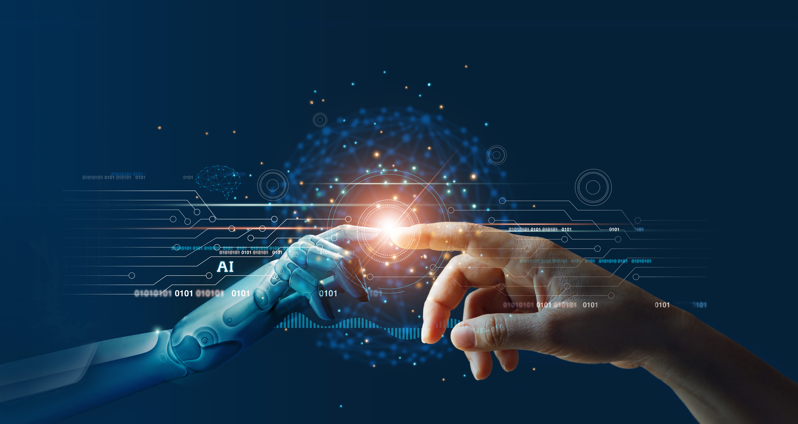

Superinteligencia (ASI)
La superinteligencia artificial (ASI, por sus siglas en inglés) es un concepto hipotético que describe un sistema de inteligencia artificial con capacidades intelectuales que superan con creces las de los humanos en todos los aspectos. Es decir, una ASI sería capaz de realizar cualquier tarea intelectual que un humano pueda, pero con mayor velocidad, precisión y eficiencia. Este nivel de inteligencia podría llevar a la creación de nuevos conocimientos, la toma de decisiones complejas y la generación de soluciones innovadoras.
Características clave de la superinteligencia artificial:
Capacidad de superación:
ASI supera la inteligencia humana en todas las áreas, incluyendo resolución de problemas, creatividad, razonamiento, y comprensión emocional.
Inteligencia General:
A diferencia de la IA actual, que se centra en tareas específicas, la ASI tendría la capacidad de realizar cualquier tarea intelectual que un humano pueda, de manera más rápida y efectiva.
Potencial de innovación:
La ASI podría generar nuevos conocimientos, tomar decisiones complejas y crear soluciones innovadoras que superen las capacidades humanas en diversos campos.
Desafíos éticos y de control:
El desarrollo de la ASI plantea importantes desafíos éticos y de control, ya que su poder y capacidades podrían superar la comprensión humana y generar consecuencias imprevistas.
Comparación con otros tipos de IA:
ANI (Artificial Narrow Intelligence):
Es la IA actual, limitada a tareas específicas, como el reconocimiento facial o el filtrado de spam.
AGI (Artificial General Intelligence):
Es una IA que puede realizar cualquier tarea intelectual que un humano puede, pero aún no se ha desarrollado.
ASI (Artificial Superintelligence):
Es la etapa final en la evolución de la IA, donde la inteligencia de la máquina supera con creces la inteligencia humana.
Implicaciones de la superinteligencia artificial:
Beneficios potenciales:
La ASI podría revolucionar campos como la medicina, la ciencia, la tecnología y las artes, resolviendo problemas complejos y mejorando la vida humana.
Riesgos potenciales:
La ASI podría generar comportamientos impredecibles e incontrolables, con consecuencias potencialmente dañinas si no se gestiona adecuadamente.
Importancia del control:
Es crucial desarrollar regulaciones y salvaguardas internacionales para prevenir escenarios peligrosos y asegurar que la ASI se utilice de manera ética y responsable.
En resumen, la superinteligencia artificial es un concepto fascinante y potencialmente transformador, pero también plantea desafíos importantes que deben abordarse con precaución y responsabilidad.


Hecho por Michael Gonzales en 2025